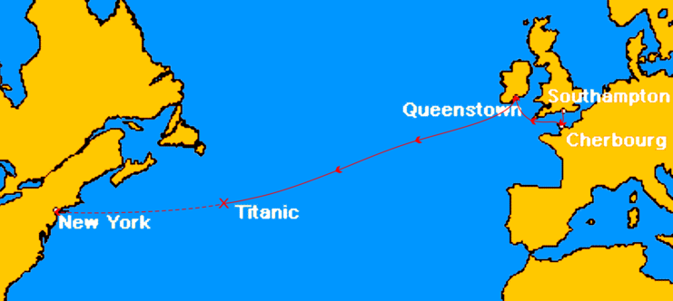
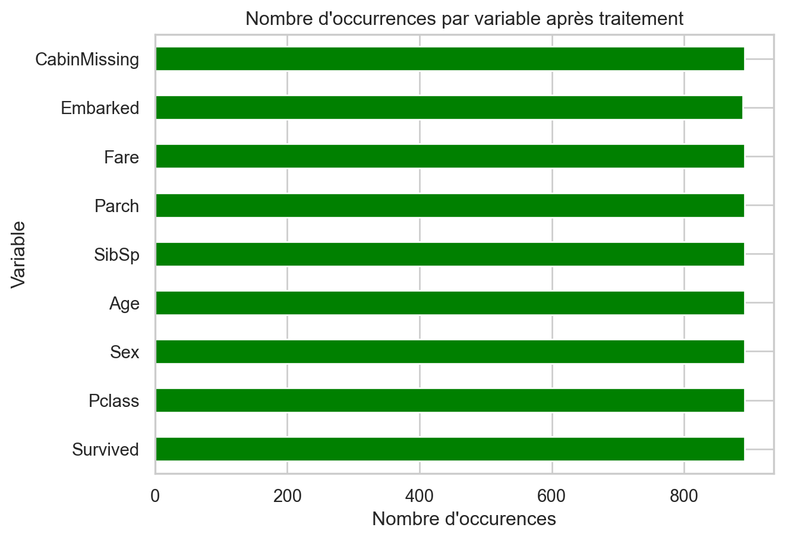
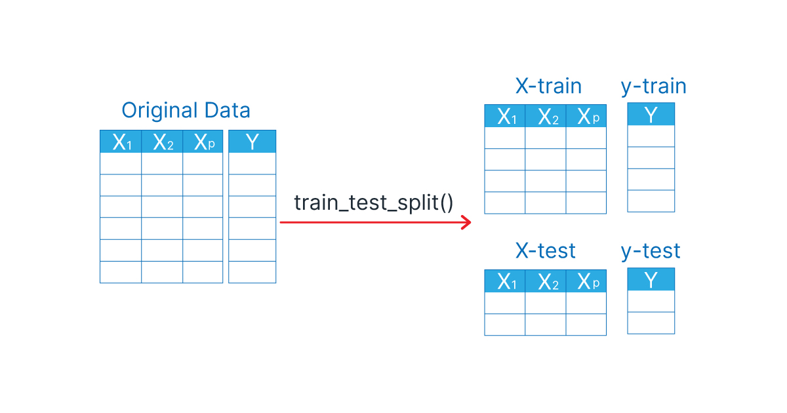

| PassengerId | Survived | Pclass | Name | Sex | Age | SibSp | Parch | Ticket | Fare | Cabin | Embarked | |
|---|---|---|---|---|---|---|---|---|---|---|---|---|
| 0 | 1 | 0 | 3 | Braund, Mr. Owen Harris | male | 22.0 | 1 | 0 | A/5 21171 | 7.2500 | NaN | S |
| 1 | 2 | 1 | 1 | Cumings, Mrs. John Bradley (Florence Briggs Th... | female | 38.0 | 1 | 0 | PC 17599 | 71.2833 | C85 | C |
| 2 | 3 | 1 | 3 | Heikkinen, Miss. Laina | female | 26.0 | 0 | 0 | STON/O2. 3101282 | 7.9250 | NaN | S |
| 3 | 4 | 1 | 1 | Futrelle, Mrs. Jacques Heath (Lily May Peel) | female | 35.0 | 1 | 0 | 113803 | 53.1000 | C123 | S |
| 4 | 5 | 0 | 3 | Allen, Mr. William Henry | male | 35.0 | 0 | 0 | 373450 | 8.0500 | NaN | S |
Peut-on prédire les survivants du Titanic ?
Python
Machine learning
Scikit-Learn
Bien que la chance ait joué un rôle dans la survie des passagers, certaines catégories de personnes semblent avoir eu un avantage. Est-il possible de prédire ces chances de survie à l’avance ?
Le naufrage du Titanic est l’un des plus terribles qu’il ait pu exister. Le 15 avril 1912, lors de son voyage inaugural, ce paquebot de 269 mètres de long (une trentaine de mètres de moins que la tour Eiffel) a coulé. Le trajet était le suivant, le 10 avril 1912, le RMS Titanic, quittait Southampton en Angleterre pour une traversée qui devait le conduire jusqu’à New York aux Etats-Unis, après une escale à Cherbourg et en Irlande.

Il était qualifié d’insubmersible, mais sa collision avec un iceberg en a décidé autrement. Malheureusement, le nombre de canots de sauvetage était inférieur au nombre de passagers à bord. Cela a entraîné la mort de 1502 des 2224 passagers et membre d’équipage. Miracle ! Il y a eu 711 rescapés.
Bien que la chance ait joué un rôle dans la survie des passagers, certaines catégories de personnes semblent avoir eu un avantage. Est-il possible de prédire ces chances de survie à l’avance ? Si oui, quel type de personnes avaient le plus de chance de survivre ?
Nous allons utilisé des méthodes d’apprentissage supervisé pour répondre à ces questions. L’objectif de l’apprentissage supervisé est de prévoir l’étiquette \(Y\) ou la valeur de \(Y\) (régression) associée à une nouvelle entrée, où il est sous-entendu que (\(X, Y\)) est une nouvelle réalisation des données, indépendante de l’échantillon observé. Ici, nous utilserons 4 algorithmes différents : l’algorithme des \(k\) plus proches voisins, la régression logistique, un arbre de décision et l’algorithme SVM.
Nous utiliserons Python et la librairie Scikit-learn, bibliothèque open source d’apprentissage automatique dédiée au machine learning pour réalisé une classification. Ici, on est dans un cas de classification et non de régression, car notre variable cible (\(Y\)) est une étiquette (Survécu ou Non survivant).
Préparation des données
Nous commençons par importer le très célèbre jeu de données Titanic (Discponible ici). De plus, nous faisons appel à quelques librairies (Il est nécessaire des les installer avant de les appeler).
---
# Import librairies ----
import pandas as pd
import numpy as np
import matplotlib.pyplot as plt
import seaborn as sns
import plotly.express as px
import matplotlib.colors as mcolors
# Import dataset ----
titanic <- pd.read_csv('titanic.csv')
---Ci-dessous un petit aperçu des 5 premières lignes du jeu de données.
---
titanic.head()
---Notre jeu de données contient 891 observations et 12 variables. Parmi elles, 11 sont explicatives et contiennent des informations sur les passagers, tandis que la dernière est la variable cible Survived. Celle-ci indique si un passager a survécu (1) ou non (0), ce que nous cherchons à prédire.
---
titanic.shape
---(891, 12)Maintenant, on analyse nos variables plus en détail.
---
titanic.info()
---<class 'pandas.core.frame.DataFrame'>
RangeIndex: 891 entries, 0 to 890
Data columns (total 12 columns):
# Column Non-Null Count Dtype
--- ------ -------------- -----
0 PassengerId 891 non-null int64
1 Survived 891 non-null int64
2 Pclass 891 non-null int64
3 Name 891 non-null object
4 Sex 891 non-null object
5 Age 714 non-null float64
6 SibSp 891 non-null int64
7 Parch 891 non-null int64
8 Ticket 891 non-null object
9 Fare 891 non-null float64
10 Cabin 204 non-null object
11 Embarked 889 non-null object
dtypes: float64(2), int64(5), object(5)
memory usage: 83.7+ KBOn remarque que trois variables contiennent des valeurs manquantes : Age, Cabin et Fare. Les modèles d’apprentissage automatique ne peuvent pas gérer directement ces valeurs, donc on va devoir les traiter.
Ensuite, on remarque qu’on a à la fois des variables quantitatives et qualitatives. Parmi ces dernières, certaines contiennent des informations textuelles. Comme la plupart des modèles sont conçus pour travailler avec des données numériques, il faudra traiter ces variables, par exemple en les transformant en variables binaires (dichotomisation).
Enfin, on sait que la variable Name ne nous sera pas utile, car il est peu probable qu’elle ait un lien direct avec la variable cible. De plus, ces informations sont non structurées, car les noms et prénoms sont écrits en texte libre. Cependant, il pourrait y avoir une corrélation entre le titre (M, Mme, Dr, etc.) et la cible, mais ce n’est pas ce que nous allons explorer ici.
Ci-dessous, les statistiques descriptives de nos 2 variables quantitatives continues.
---
titanic[['Age', 'Fare']].describe()
---| Age | Fare | |
|---|---|---|
| count | 714.000000 | 891.000000 |
| mean | 29.699118 | 32.204208 |
| std | 14.526497 | 49.693429 |
| min | 0.420000 | 0.000000 |
| 25% | 20.125000 | 7.910400 |
| 50% | 28.000000 | 14.454200 |
| 75% | 38.000000 | 31.000000 |
| max | 80.000000 | 512.329200 |
On observe une forte dispersion des valeurs sur la variable Fare, avec des écarts importants entre les prix les plus bas et les plus élevés. Il est donc essentiel de normaliser ces données, surtout lorsque l’on utilise des algorithmes sensibles aux distances. Sans cette mise à l’échelle, les tarifs élevés, notamment ceux de la 1ʳᵉ classe, risquent d’avoir une influence disproportionnée sur le modèle, faussant ainsi les résultats.
| Non Survivant | Survivant | |
|---|---|---|
| Sex | ||
| female | 25.80% | 74.20% |
| male | 81.11% | 18.89% |
On observe sur la variable Survived une disparité marquée entre les sexes : 74,20 % des femmes ont survécu contre seulement 18,89 % des hommes.
| proportion | |
|---|---|
| Non Survivant | 61.62% |
| Survivant | 38.38% |
La variable Survived est déséquilibrée, avec une majorité de passagers n’ayant pas survécu. Il y a significativement plus de décès que de survivants, ce qui peut influencer les performances du modèle prédictif. Il sera donc important de prendre en compte ce déséquilibre lors de l’entraînement des algorithmes.
Visualisation graphique
La section précédente nous a permis d’identifier les incohérences et anomalies dans nos données. Dans cette même optique, nous allons maintenant les analyser visuellement afin de mieux comprendre leur répartition.
Nous présentons ici seulement quelques graphiques intéressants, mais il existe bien d’autres visualisations possibles tout aussi intéressantes.
Cliquer pour voir le code
cmap = sns.cubehelix_palette(rot=-.2, as_cmap=True)
colors = [mcolors.rgb2hex(c) for c in cmap.colors]
fig = px.scatter(titanic,
x="Age", y="Fare",
color="SibSp", size="Pclass",
color_continuous_scale=colors,
labels={"Age": "Age", "Fare": "Fare"},
log_x=True, log_y=True)
fig.update_traces(marker=dict(sizemode='area',
opacity=0.7, line=dict(width=0)),
selector=dict(mode='markers'))
fig.update_layout(
template="plotly_white",
title_text='Relation entre l\'âge et le prix du Billet selon le Nombre de frères/sœurs et conjoints',
)
fig.show()Les passagers les plus âgés, ayant payé les tarifs les plus élevés, voyagent principalement en 1ʳᵉ classe et sont souvent seuls ou avec un membre de leur famille. En revanche, ceux ayant payé les tarifs les plus bas sont majoritairement en 2ᵉ ou 3ᵉ classe, avec souvent plusieurs frères et sœurs à bord.
Cliquer pour voir le code
color_map = {0: 'red', 1: 'green'}
fig = px.strip(titanic,
x="Sex", y="Age",
color="Survived",
category_orders={"Sex": ["male", "female"]},
labels={"Age": "Age", "Sex": "Sex"},
color_discrete_map=color_map)
fig.update_traces(marker=dict(size=8, opacity=0.7, line=dict(width=0)),
selector=dict(mode='markers'))
fig.update_layout(
yaxis_title="",
template="plotly_white",
title_text='Répartition de l\'âge selon le sexe et la survie à bord'
)
fig.show()Les femmes (35,2 %) sont beaucoup moins représentées dans le jeu de données que les hommes (64,8 %). On observe qu’il y a une densité élevée de survivantes dans la tranche des jeunes adultes et des adultes moyens. Les hommes sont sur-représentés parmi les non-survivants, avec une concentration plus marquée parmi les adultes jeunes et moyens.
Nous savons que les femmes et les enfants avaient des priorités d’évacuation pendant le naufrage et elles avaient donc une probabilité de survie plus élevée que celle des hommes.
Cliquer pour voir le code
fig = px.histogram(titanic,
x="Age",
color="Survived",
facet_col="Survived",
nbins=20,
color_discrete_map={0: 'red', 1: 'green'},
labels={"Age": "Age", "Survived": "Survived"},
histnorm="percent")
fig.update_traces(marker_line_color="black",
marker_line_width=1)
fig.update_layout(
title="Répartition de l'âge en fonction de la survie",
template="plotly_white",
xaxis_title="Âge",
yaxis_title="Fréquence (%)"
)
fig.show()Traitement des données
Maintenant que nous avons une vue d’ensemble de nos données, nous allons nous concentrer sur le traitement des anomalies identifiées précédemment, en vue de préparer efficacement la construction du modèle.
Nous commençons par convertir la variable Sexe en une variable binaire. Ici, nous la remplaçons directement en créant une nouvelle version par-dessus. Cependant, il est recommandé de créer une variable distincte afin de préserver l’intégrité des données d’origine.
---
titanic['Sex'] = (titanic['Sex'] == 'female').astype(int)
---Avant conversion :
0 male
1 female
2 female
3 female
4 male
Name: Sex, dtype: object
Après conversion :
0 0
1 1
2 1
3 1
4 0
Name: Sex, dtype: int64Nous passons maintenant au traitement des données manquantes. Il existe plusieurs approches pour compléter les données manquantes. Par exemple, la suppresion des observations, l’imputation de ces données par une valeur tel que la moyenne, la médiane … On introduirait cependant un biais sur cette valeur. Il est également possible d’imputer les données manquantes à l’aide d’une méthode statistique (régression, \(k\) plus proches voisins).
Cliquer pour voir le code
titanic.count().plot(kind='barh', title="Nombre d'occurrences par variable avant traitement",
xlabel="Nombre d'occurences",
ylabel="Variable")
Dans notre jeu de données, il manque des données pour les variables Age, Embarked et Cabin.
La variable Cabin est très peu renseignée. Il est inutile d’imputer les valeurs manquantes par une autre valeur, nous choisissons donc de supprimer cette variable. Toutefois, nous décidons de créer une nouvelle variable indiquant si cette donnée a été renseignée ou non {0; 1}.
---
titanic['CabinMissing'] = titanic.Cabin.isnull().astype(int) # Variable indicatrice
titanic = titanic.drop('Cabin', axis=1) # Suppresion de Cabin
titanic['CabinMissing'] # Visualisation de CabinMissing
---0 1
1 0
2 1
3 0
4 1
..
886 1
887 0
888 1
889 0
890 1
Name: CabinMissing, Length: 891, dtype: int64La variable Age est bien plus renseigné que la variable Cabin, on décide d’imputer ces valeurs manquantes par l’âge médian. Évidemment, cela biaisera notre distribution.
L’âge médian des passagers est de 28 ans. Nous imputerons les 177 valeurs manquantes par cet valeur.
---
titanic.Age.median()
---np.float64(28.0)---
age_median = titanic.Age.median()
titanic['Age'] = titanic.Age.fillna(median_age)
---Ci-dessous, nous observons les distributions de l’âge avant et après imputation. On remarque clairement que l’imputation a modifié la distribution des données.
Cliquer pour voir le code
from plotly.subplots import make_subplots
import plotly.graph_objects as go
fig = make_subplots(rows=1, cols=2, subplot_titles=["Avant imputation", "Après imputation"], shared_yaxes=True)
fig.add_trace(
go.Histogram(x=titanic["Age"], nbinsx=20, name="Age", marker_color="blue"),
row=1, col=1
)
fig.add_trace(
go.Histogram(x=titanic["Age_2"], nbinsx=20, name="Age_2", marker_color="darkcyan"),
row=1, col=2
)
fig.update_traces(marker_line_color="black",
marker_line_width=1)
fig.update_layout(
title="Distribution de l'âge des passagers du Titanic",
template="plotly_white",
xaxis_title="Âge",
yaxis_title="Nombre de passagers",
showlegend=False
)
fig.show()Nous remplaçons les deux valeurs manquantes de la variable Embarked, représentant le port de départ, par le port de départ majoritaire des passagers.
---
maj_port = titanic["Embarked"].mode()[0]
titanic["Embarked"].fillna(maj_port, inplace=True)
---Enfin, nous excluons les variables suivantes :
PassengerId : Il s’agit d’un simple identifiant sans influence sur la survie.
Name : Cette variable contient des informations textuelles difficiles à exploiter directement.
Ticket : Elle présente trop de valeurs uniques et apporte peu d’informations pertinentes.
---
titanic = titanic.drop(columns=["PassengerId", "Name", "Ticket"])
---Le jeu de données est désormais complet, sans aucune valeur manquante.
Cliquer pour voir le code
titanic.count().plot(kind='barh', color='green', title="Nombre d'occurrences par variable après traitement",
xlabel="Nombre d'occurences",
ylabel="Variable")
Variables pertinentes
Nous mesurons la corrélation entre les variables explicatives et notre variable cible afin d’identifier celles qui ont le plus d’influence sur la prédiction.
---
cor = titanic.corr(numeric_only=True)["Survived"].sort_values(ascending=False)
cor
---Survived 1.000000
Sex 0.543351
Fare 0.257307
Parch 0.081629
SibSp -0.035322
Age -0.064910
CabinMissing -0.316912
Pclass -0.338481
Name: Survived, dtype: float64Ces résultats montrent que les variables Sex et Fare sont plutôt corrélées positivement avec la survie des passagers. La variable classe, quant à elle, a une correlation négative assez élevée avec la survie des passagers. Cela est cohérent avec l’histoire du Titanic. Les autres variables ont un impact négligeable sur la survie des passagers.
Bien qu’il soit possible d’explorer d’autres analyses, telles que la sélection de variables avancée ou l’importance des features, ces méthodes ne seront pas abordées dans le cadre de cette étude.
Modélisation
Après avoir exploré et préparé notre jeu de données, nous passons maintenant à la modélisation. L’objectif est de construire un modèle capable de prédire si un passager a survécu ou non en fonction de différentes caractéristiques telles que son sexe, son âge ou sa classe de voyage. Maintenant que nous disposons de données propres et prêtes à être utilisées, nous allons entraîner notre modèle pour prédire la survie des passagers à partir des variables explicatives.
Afin de faciliter les prochaines étapes, nous créons deux objets : X pour les variables explicatives et y pour la variable cible.
---
X = titanic.drop(columns="Survived")
y = titanic[["Survived"]]
---X contient toutes les colonnes du DataFrame titanic sauf la variable Survived, tandis que y contient uniquement la variable Survived, qui est la variable cible que nous souhaitons prédire.
On commence par diviser notre jeu de données initial en deux sous-ensembles :
Un jeu d’entraînement contenant 80 % des données, sur lequel le modèle va apprendre.
Un jeu de test contenant les 20 % restants, qui servira à évaluer la performance du modèle.

L’idée est simple : on entraîne le modèle sur une partie des données, puis on teste sa capacité à faire des prédictions sur des données qu’il n’a jamais vues, pour vérifier s’il généralise bien.
---
X_train, X_test, y_train, y_test = train_test_split(X, y, test_size = 0.2, random_state = 42)
---La fonction train_test_split permet de réaliser cette séparation. Le paramètre test_size indique que, dans notre cas, 20 % des données seront utilisées pour le jeu de test. Le paramètre random_state permet de fixer une graine aléatoire afin d’obtenir des résultats reproductibles.
Nous allons maintenant mettre en place un modèle de régression logistique, qui permet de prédire une classe, en l’occurrence si un passager a survécu ou non.
---
lr = LogisticRegression(random_state = 42)
lr
---LogisticRegression(random_state=42)In a Jupyter environment, please rerun this cell to show the HTML representation or trust the notebook.
On GitHub, the HTML representation is unable to render, please try loading this page with nbviewer.org.
LogisticRegression(random_state=42)